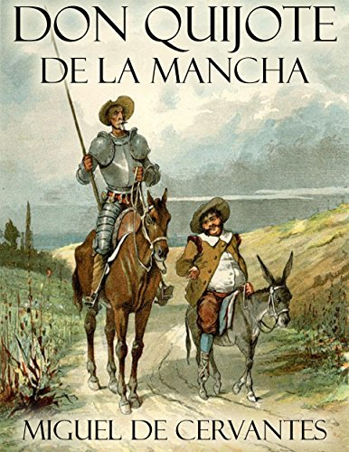

Galería de Obras Clásicas
Galería Literaria Castellana

Don Quijote de la Mancha
Un hidalgo enloquece por leer novelas de caballería y sale a vivir aventuras creyéndose caballero andante.
Cien Años de Soledad
Narra la historia de la familia Buendía y el pueblo de Macondo, mezclando realidad y fantasía.
La Casa de los Espíritus
Saga familiar con toques mágicos y políticos que muestra la historia de Chile a través de varias generaciones.

Rayuela
Novela que se puede leer de forma no lineal, explora la existencia, el amor y la búsqueda de sentido.